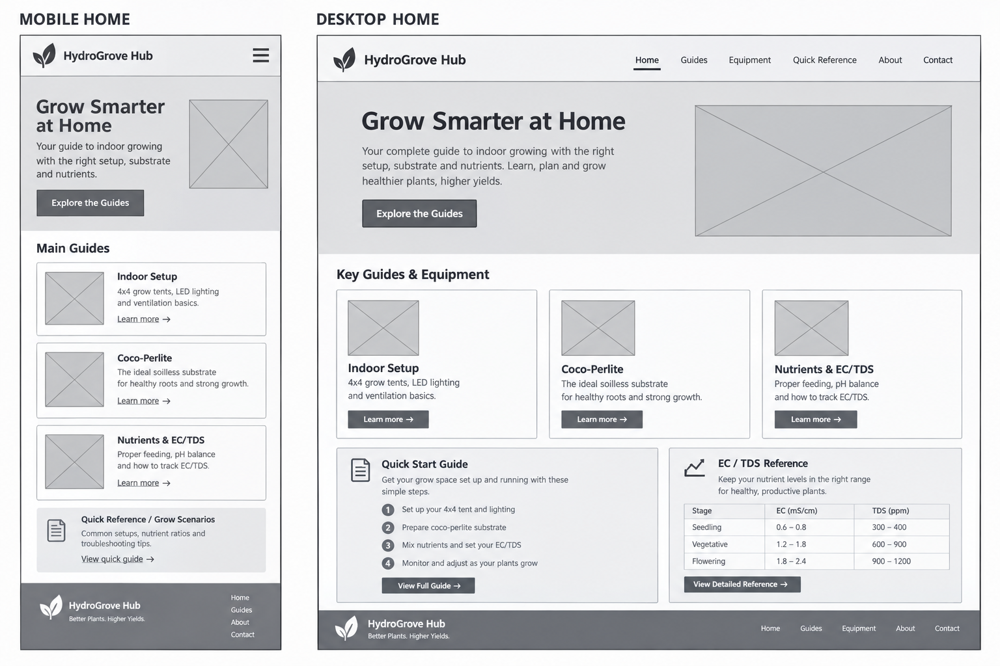

Site Name
Name: HydroGrove Hub
Reasoning: This name represents a centralized resource and digital hub dedicated to indoor and hydroponic cultivation.
Optional Domain: hydrogrovehub.org
Site Purpose
The site provides a comprehensive, guide-style digital hub for home growers. It offers clear, accessible information on setting up controlled indoor environments (such as 4x4 grow tents and LED lighting), preparing soilless coco-perlite substrates, and managing liquid nutrient fertigation schedules with precision using EC and TDS meters.
Scenarios
- What equipment size, tent dimensions, and LED lighting configuration do I need to start a small indoor grow?
- How do I properly mix liquid nutrients and track my nutrient solution's EC and TDS targets using a 5-in-1 meter?
Color Scheme
Primary Accent (#2D5A27): Used for main headings, navigation bars, and call-to-action buttons.
Background / Container (#F4F7F4): Used for the page background and content card containers.
Text Color (#222222): Used for body paragraphs and general text.
Typography
Heading Font: Poppins, sans-serif
Body Font: Inter, sans-serif
Wireframes
